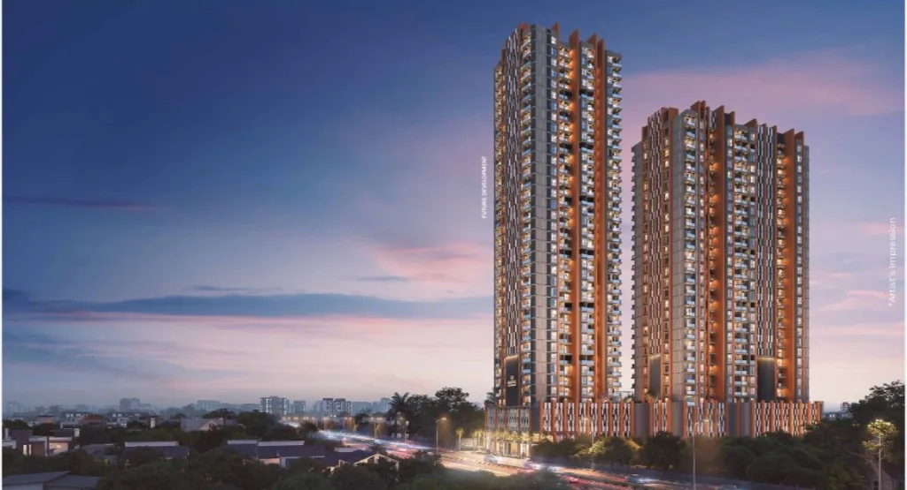

Home Loan Tax Benefits: Wakad Perspective 2027
Our detailed look into Home Loan Tax Benefits reveals important trends for Wakad in 2027. Stay informed with Krisala Legacy's expert real estate insights. As the market evolves, understanding Home Loan Tax Benefits will give buyers in Wakad a distinct advantage when securing their dream home.
Why Choose Krisala Aventis Tathawade?
- ✓ 40+ Premium Lifestyle Amenities
- ✓ Prime Location in Tathawade
- ✓ Unmatched Connectivity to Hinjewadi IT Hubs
- ✓ Advanced Aluform Construction Technology
- ✓ Smart Study Spaces in Every Home
Frequently Asked Questions
How does Home Loan Tax Benefits apply to Wakad?▼
For buyers in Wakad, understanding Home Loan Tax Benefits is critical in 2027 to maximize investment potential.
Where can I get expert advice?▼
The Krisala Legacy team offers expert guidance on all aspects of real estate purchasing.